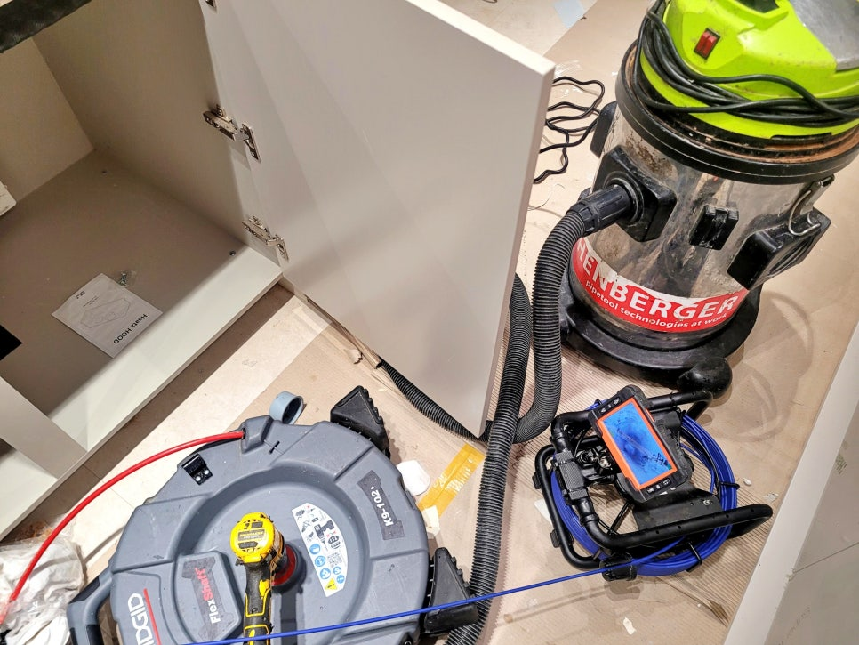
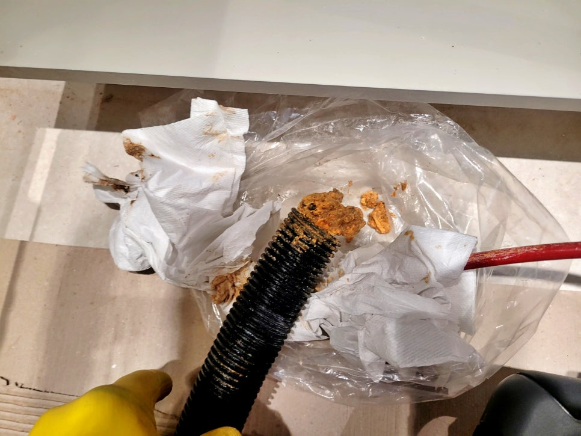
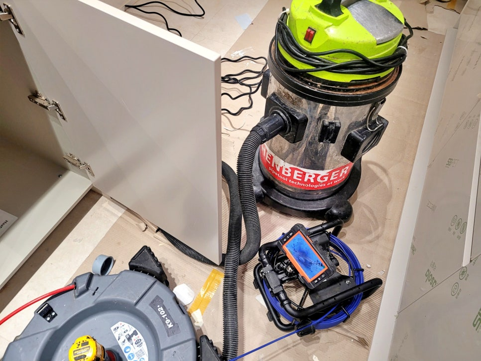
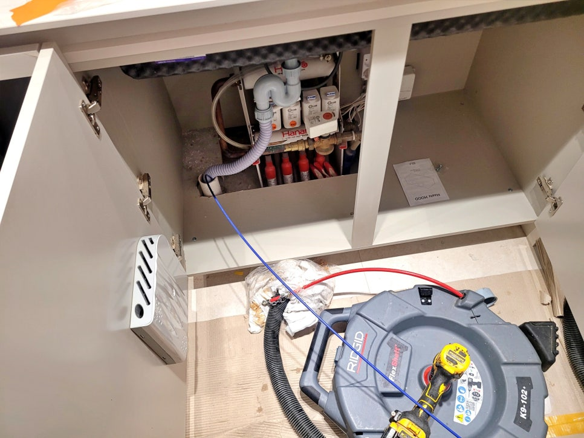
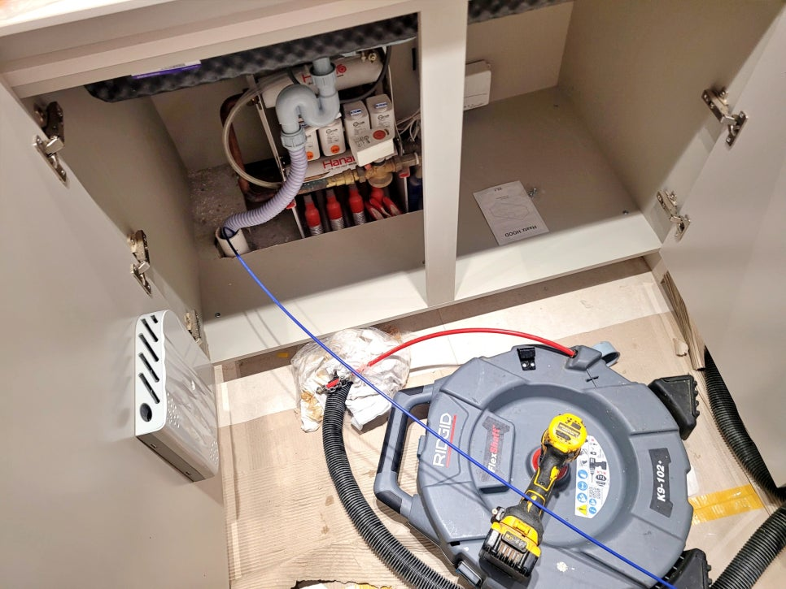
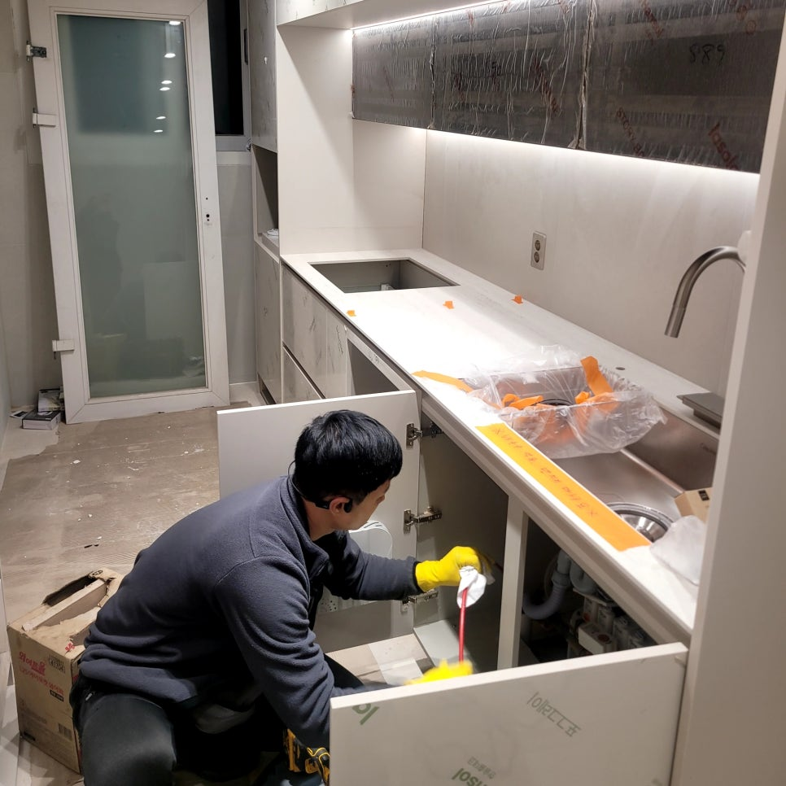

🏠 동탄 산척동 싱크대 배수구막힘, 기름으로 막힌 배관 세척작업
화성 산척동 싱크대막힘 전문 시공 후기

📋 작업 개요
- 위치: 화성 산척동, 산척동, 화성
- 서비스 유형: 싱크대막힘, 하수구막힘, 배관막힘, 역류해결, 배관청소, 고압세척, 설비공사
- 작업 일시: 2026. 4. 9. 17:09
- 업체명: 하수구수사대 (010-5615-2118)
🔍 문제 상황
화성 동탄 산척동 싱크대 배수구막힘
기름으로 막힌 배관 세척작업 전문후기
환영합니다.
배관 세척 전문업체
하수구수사대입니다.
이번 현장은 동탄 산척동 아파트
인테리어 현장에서 접수된
싱크대 배수구막힘 사례인데요.
입주 전 담수테스트를 하던 중
배수가 시원하게 내려가지 않아
급히 점검 요청을 주셨습니다.
겉으로는 새 싱크대가 설치된
상태였지만, 배수는 이미
불안정한 흐름을 보이고 있었고
그대로 입주했다면 사용 직후
역류나 악취로 이어질 수 있는
상황이었습니다.
동탄 싱크대 배수구막힘 현장 개요
1. 위치 : 화성 동탄 아파트 인테리어
2. 문제 : 배수 테스트 도중 역류 발생
3. 원인 : 배관 내부에 쌓인 기름
4. 조치 : 내시경 점검 및 샤프트 작업

🔎 원인 분석
💡 전문가 진단: 화성 동탄 산척동 싱크대 배수구막힘기름으로 막힌 배관 세척작업 전문후기
석션 장비로 입구에 쌓인 기름 제거
먼저 하부장을 열고 배수라인과
트랩 연결 상태를 살펴본 뒤
내시경 카메라를 투입해
배관 내부부터 확인했는데요.
입구부터 안쪽 깊숙한 곳까지
오염물이 많이 쌓여 있었습니다.
내시경 카메라로 내부 점검 중
카메라 화면에는 배관 벽면을 따라
기름 찌꺼기가 두껍게 달라붙은
모습이 그대로 보였고,
통로가 좁아져 물이 한꺼번에
빠지지 못하는 상태였는데요.
인테리어 직후라 배관도 깨끗할 거라
생각하기 쉽지만, 기존 사용 흔적이
남아 있거나 공사 전 누적된
기름때가 그대로 남아 있으면
이런 막힘은 충분히 생길 수 있습니다.
플렉스 샤프트로 배관 세척 청소 중
원인을 찾은 뒤에는 배관 세척 장비와
플렉스 샤프트 장비를 사용해
내부 기름 슬러지를 하나씩

🔧 작업 과정
제거하는 작업을 진행했는데요.
중간중간 배출되는 오염물만 봐도
배수구 내부가 얼마나 많은 기름으로
막혀있었는지 짐작할 수 있었습니다.
배관 속 찌꺼기를 제거한 뒤에는
다시 내시경으로 내부 상태를
재점검하면서 세척 구간이
제대로 열렸는지 살펴봤고요.
막혀 있던 통로가 한층 넓어지고
깨끗해진 모습으로 바뀌었습니다.
샤프트 노즐에 걸려올라온 기름
이후 이전보다 더 많은 물을 붓는
담수테스트를 다시 진행하니
시원하게 소용돌이를 일으키며
내려가는 모습이 확인됐는데요.
깨끗해진 배관 내부 모습
이번 현장은 무엇보다도
이사 오기 전에 문제를 발견한 것이
가장 큰 포인트였습니다.
입주 후 막힘이 생기면 생활 불편은
물론 바닥 오염과 재작업 부담까지
커질 수 있기 때문입니다.
오늘의 배관 청소 후기를 마치며
오늘 소개한
동탄 산척동 싱크대 배수구막힘은
이전에 사용하던 배관 내부에
오랫동안 쌓인 기름 오염이 직접적인
역류 원인이었고요.
하수구수사대는 내시경 카메라
점검으로 원인을 정확히 파악하고
적합한 세척 장비로 배관을 세척해
깔끔하게 마무리해드렸습니다.
지금 혹시
싱크대막힘이나 배관 악취로 불편을
겪고 있으신가요?


✅ 작업 완료
그렇다면 화성 동탄 싱크대 배관청소
전문업체인 하수구수사대가 신속하게
출동해 해결해 드리겠습니다.
이상으로
"동탄 산척동 싱크대 배수구막힘
기름으로 막힌 배관 세척작업"
후기를 마치겠습니다.
감사합니다.
#동탄산척동싱크대배수구막힘 #동탄산척동배관세척 #싱크대배수구막힘 #배관세척 #하수구수사대 #동탄싱크대하수구막힘 #싱크대막힘해결 #내시경배관점검




⚠️ 주방 싱크대 배관 막힘 예방 수칙
- ✅ 기름기가 묻은 식기나 프라이팬은 설거지 전 키친타올로 반드시 기름때를 닦아내세요.
- ✅ 주기적으로 싱크대 개수대에 뜨거운 물을 가득 받아 한 번에 내려 배관 내부 기름을 씻어내세요.
- ✅ 배수구 거름망을 미세한 필터로 사용하시고 음식물 찌꺼기가 틈으로 새어 들지 않게 관리하세요.
- ✅ 베이킹소다와 식초를 뜨거운 물과 함께 일주일에 한 번씩 부어주면 배관 살균과 막힘 예방에 좋습니다.
💡 핵심 정리
- 확실한 장비 작업(내시경 점검 및 샤프트 스케일링)으로 원인을 뿌리 뽑습니다.
- 작업 후 1년 이내에 동일한 부위 재발 시 100% 무상 A/S 서비스를 보장합니다.
- 서울 · 경기 · 인천 전 지역에 24시간 언제든 긴급 출동할 수 있도록 항시 대기 중입니다.
❓ 자주 묻는 질문 (FAQ)
🚨 화성 산척동 싱크대막힘 문제로 고민이신가요?
정확한 원인 진단과 확실한 시공으로 재발 없는 해결을 약속드립니다.
24시간 긴급 출동 | 서울 · 경기 · 인천 전지역 | 1년 내 재발 시 무상 A/S